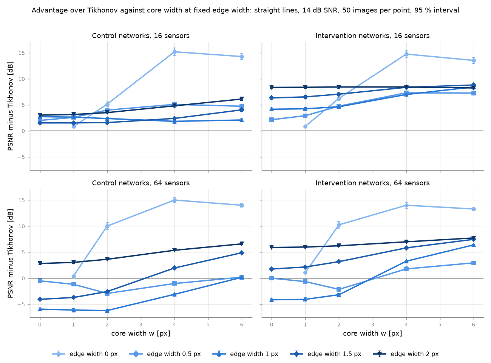
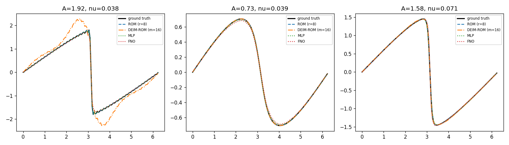
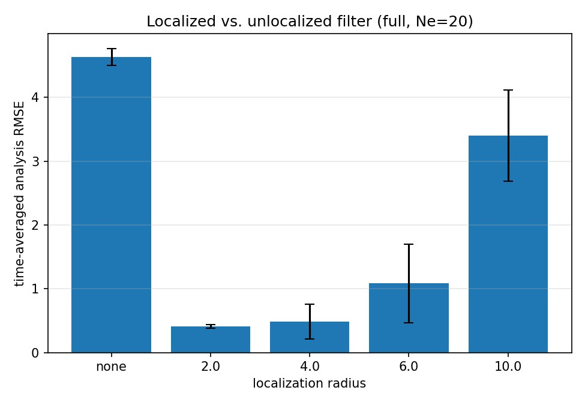
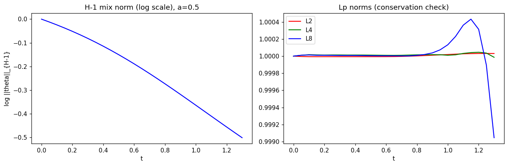
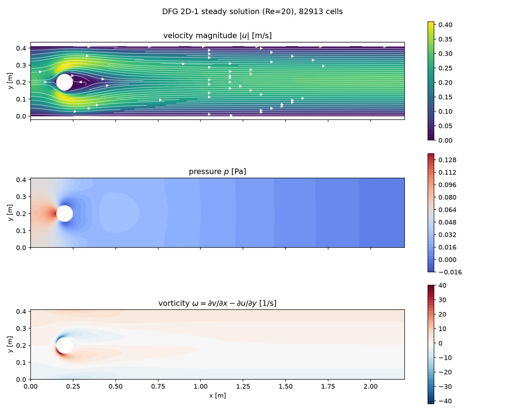

Selected research in numerical simulation, inverse problems and scientific machine learning, with methods and evaluation in each case study.
Research projects
5 projects

Thin-structure diagnostic · 50 images per pointInverse problems · Imaging
Sparse-view photoacoustic reconstruction
Testing when a learned reconstruction beats model-based inversion, and why it fails under distribution shift.
Synthetic inverse problem comparing Tikhonov inversion with learned reconstruction. A network far ahead on its training image families fell behind on unseen thin structures, and two preregistered experiments tested why.
Read case study →
Research figure · open case study for contextScientific ML · Model reduction
Reduced models & neural operators
Comparing fast approximations of nonlinear transport.
Compared classical and learned PDE surrogates: POD achieved 0.152% relative L² error versus 0.90% for FNO on 40 in-distribution cases (five FNO seeds).
Read case study →
Research figure · open case study for contextDynamical systems · Uncertainty
Data assimilation for chaotic Lorenz-96
Estimating chaotic system states from noisy observations.
In a 10-seed study with a selected localisation radius, reduced state-estimation RMSE from 4.63 to 0.41 using Ensemble Kalman filtering.
Read case study →
Research figure · open case study for contextM.Sc. thesis · Applied mathematics
Optimal mixing of passive scalars
Reproducible pseudo-spectral study of optimal passive-scalar mixing.
Extended M.Sc. thesis computations to N=512 with 48 verification tests; established approximately second-order convergence of fixed-window exponent fits.
Read case study →
Research figure · open case study for contextCFD · Finite elements
Finite-element cylinder-flow benchmarks
Measuring solver accuracy on standard cylinder-flow problems.
Taylor–Hood finite-element solver verified at O(h³)/O(h²) velocity convergence, with steady cylinder-flow results closely matching the published reference.
Read case study →